### Lock the app in Recent
1. Open Recent apps.
2. Find Your app.
3. Long-press the icon of the app.
### Battery optimization
To keep your apps working properly make sure you enable:
_Settings -> Apps -> Your App -> Battery -> Battery optimization -> All apps -> Your app -> Don't optimize_.
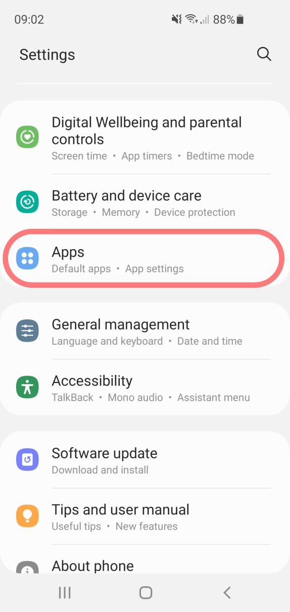
Settings -> Apps, then select Your app
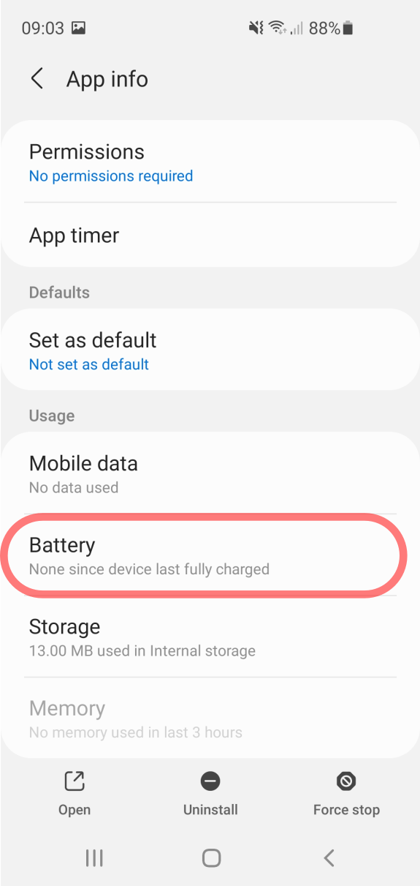
Your app -> Battery
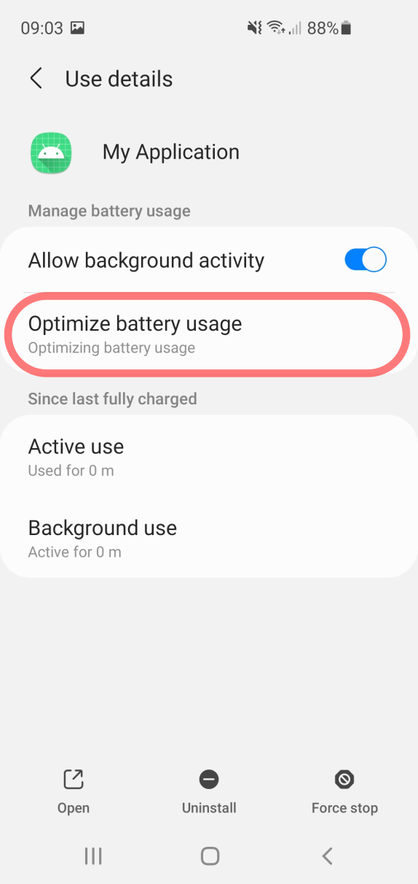
Battery -> Battery optimization
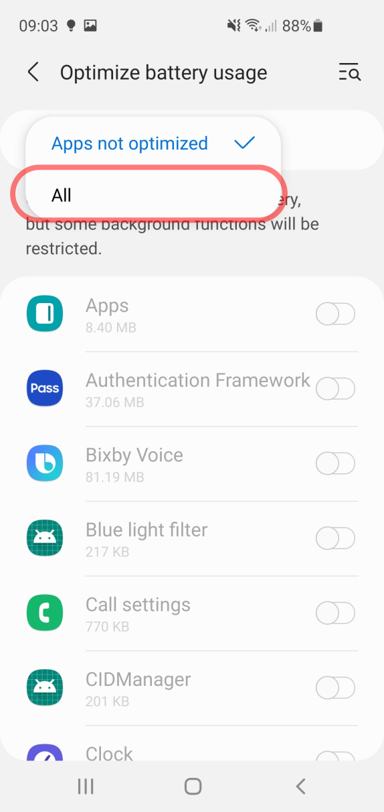
Settings -> Switch to All apps listing
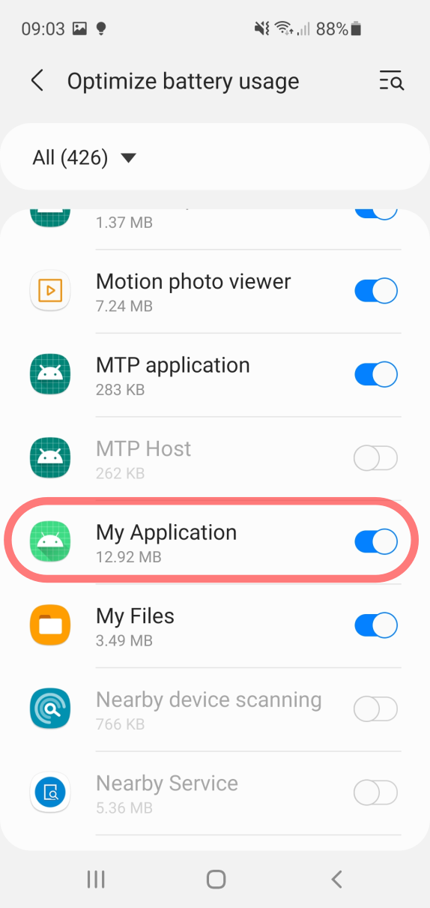
Find Your app switch off the battery optimization
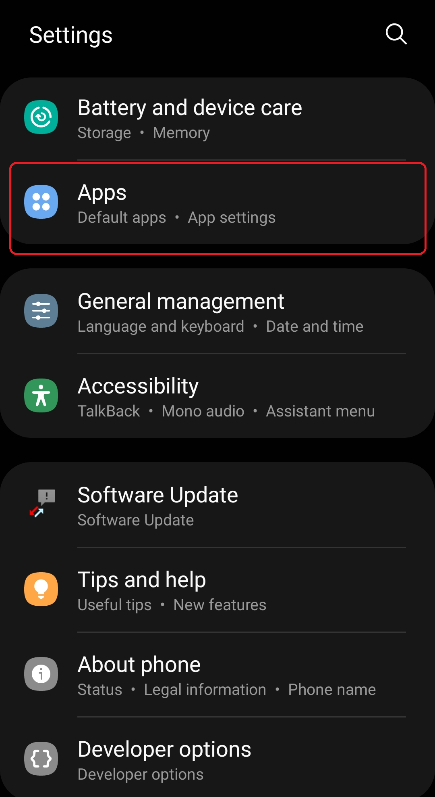
1. Open Apps section.
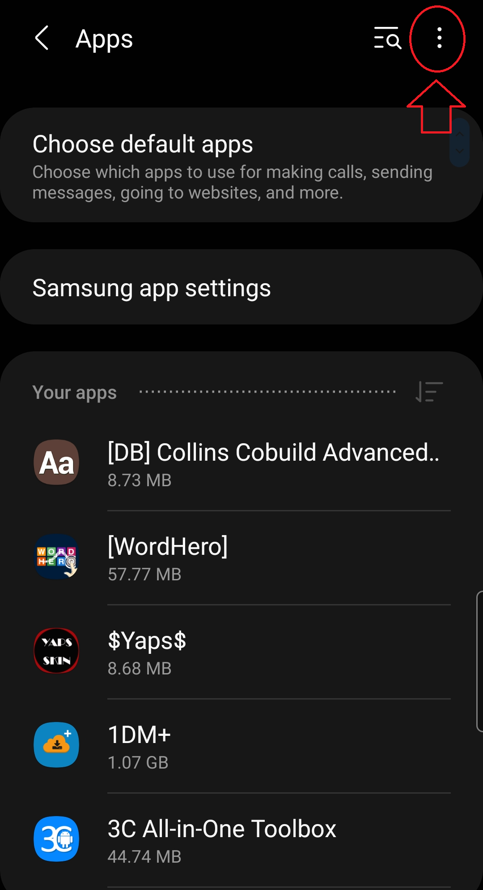
2. Tap on the (⁝) menu.
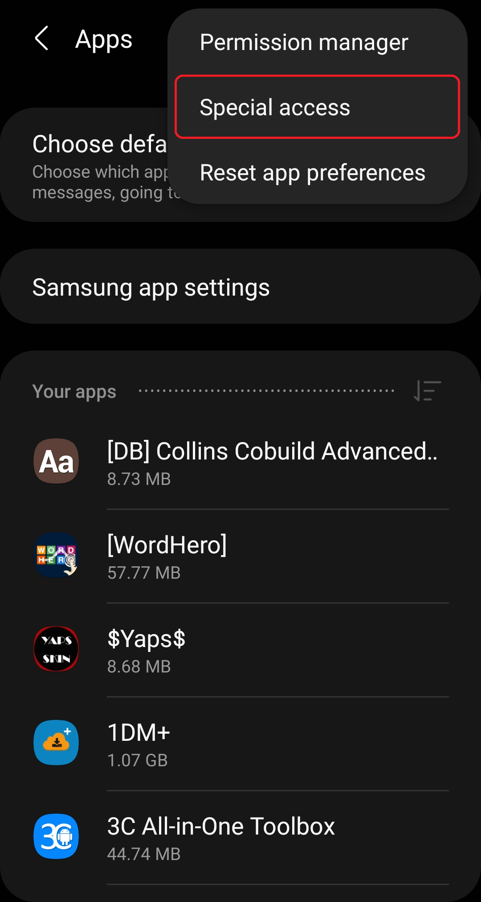
3. Choose Special Access.
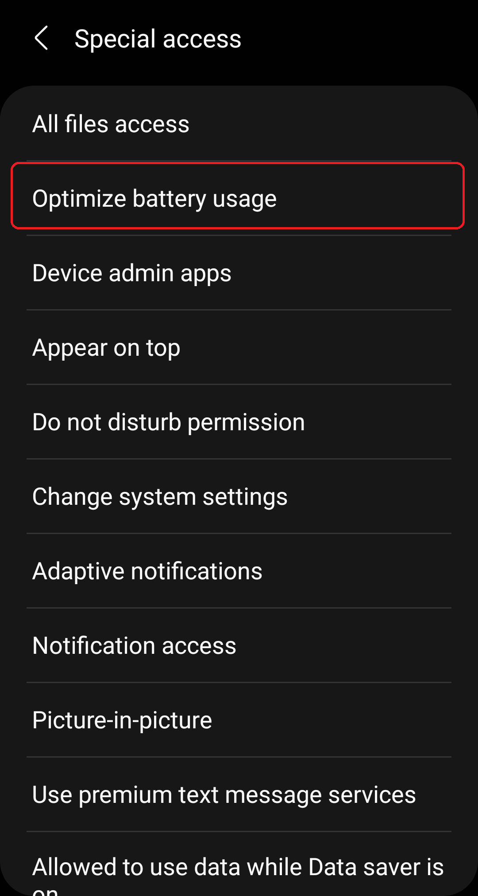
4. Open Optimiza battery usage.
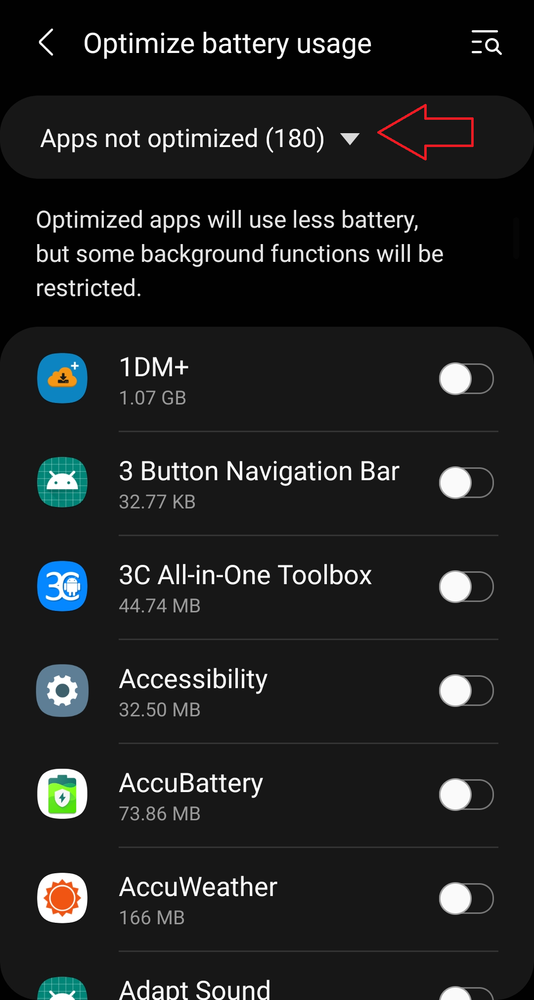
5. Expand the list to All apps.
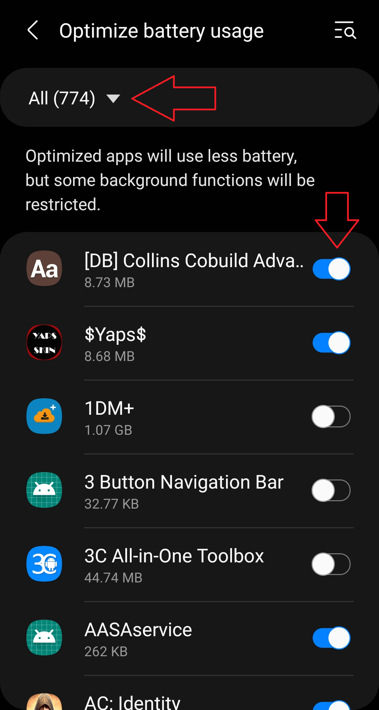
6. Toggle the apps.
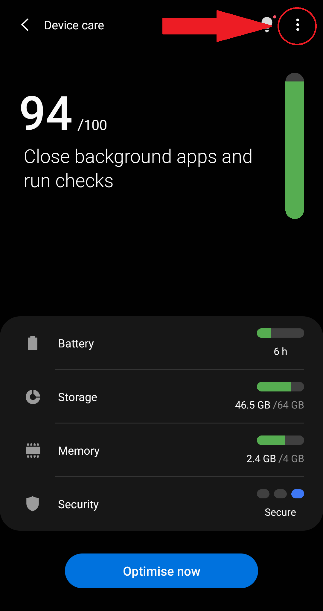
1. Device care and tap the 3-dot menu.
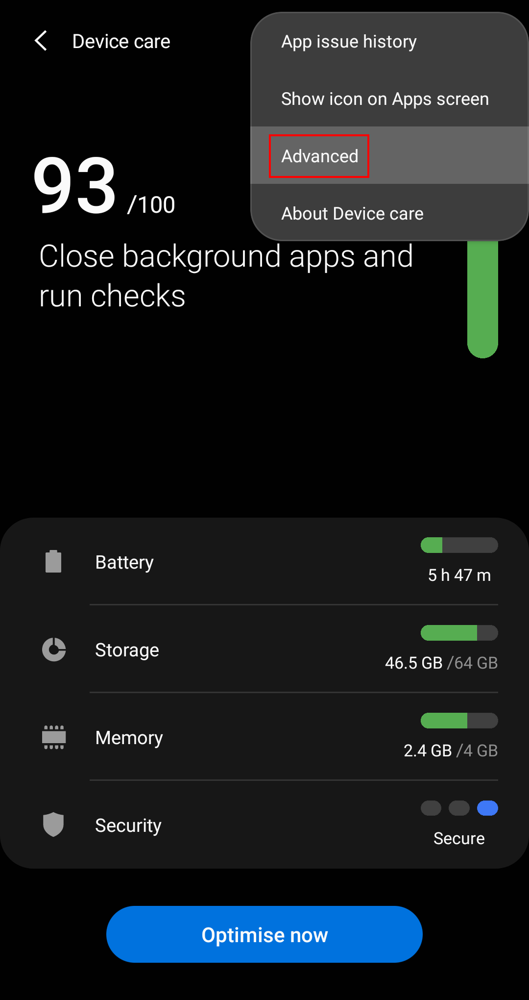
2. Tap on Advanced.
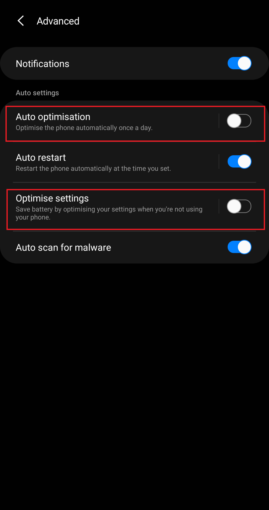
3. Disable Auto-optimization.
### Adaptive battery
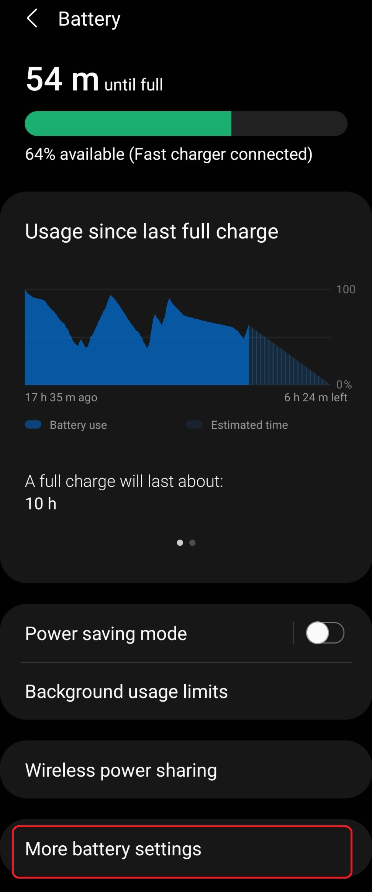
1. Open Battery -> More battery settings.
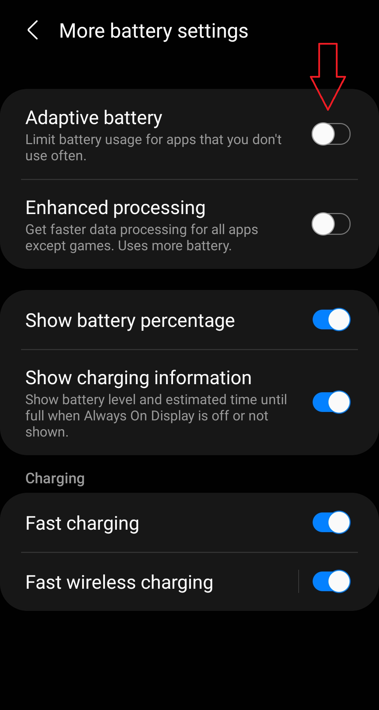
2. Disable Adaptive battery.
### Lists of Sleeping apps, Unused apps, Deep sleeping apps, Never sleeping apps
1. Open Battery > Background usage limits.
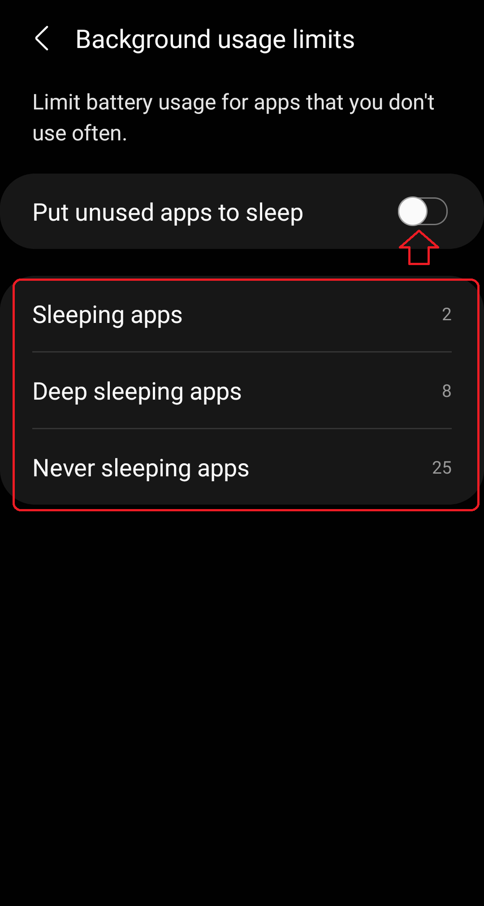
2. Check the lists.
Warning: Make sure Put unused apps to sleep is disabled. Otherwise, Samsung will put your apps back to sleep after a few days (3 by default) even if you have woken them up manually!